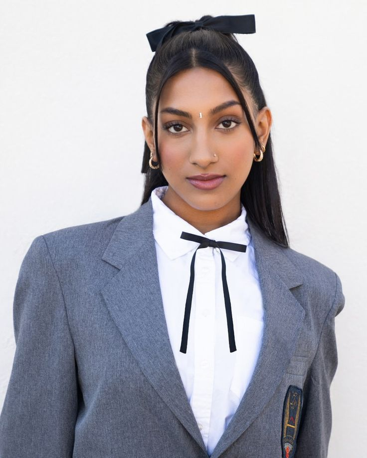

Lara Raj, cujo nome completo é Lara Rajagopalan, é uma cantora e performer indiano-americana nascida a 3 de novembro de 2005, em Dallas, Texas, mas criada em Los Angeles. Ela possui ascendência tâmil, com mãe indiana e pai cingalês
Iniciou a carreira como atriz e cantora, com apresentações já em teatros como House of Blues, e fez parte da campanha Global Girls Alliance de Michelle Obama em 2018.

Em 2023 participou do reality show “The Debut: Dream Academy”, produzido pela HYBE e Geffen, chegando à final e conquistando a sua vaga no grupo global K‑pop KATSEYE.